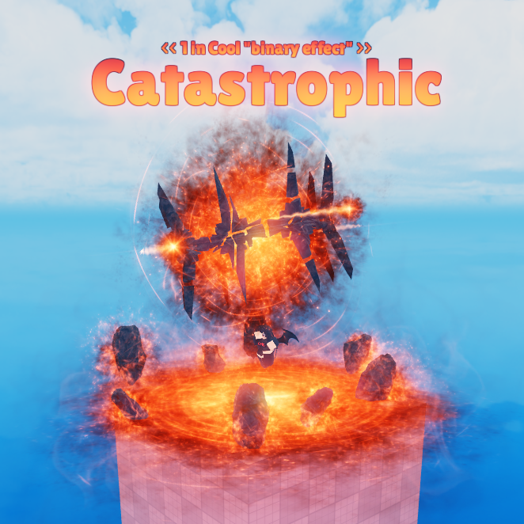
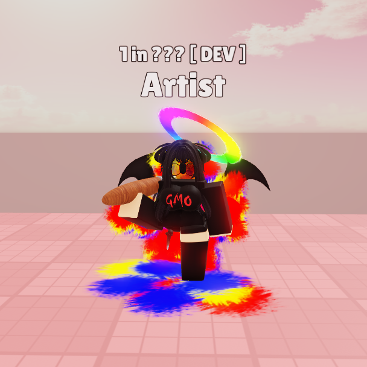
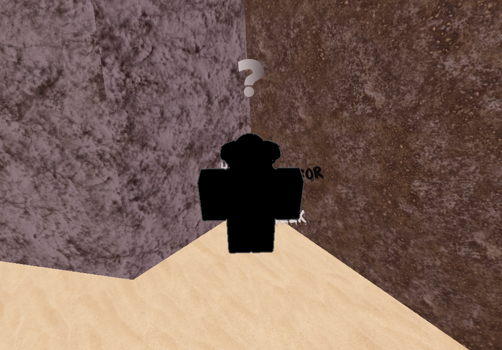
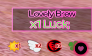

{kind=link}
{kind=link}
{kind=link}
{kind=link}
Moneda
Te da 5 monedas que puedes usar en la tienda para comprar ítems.
Roblox Studio · Juegos
El mapa, el diseño visual de las interfaces gráficas, los ítems, muchas auras, entre otras cosas, fueron diseñados por mi compañero Danfity. Todo el código está hecho con una versión antigua de mi framework, a excepción de unas pocas cosas que los dueños quisieron mantener antes de yo trabajar en el juego.
Heart's RNG es un juego hecho para un cliente, basado en otros juegos de la temática RNG; son juegos en los que todo se basa en números aleatorios y suerte. Este estilo de juego en concreto se trata de conseguir auras (efectos con diferentes estilos, bailes muy luminosos y sonidos) girando una ruleta, la cual se gira presionando el botón que dice Roll:
Tú puedes decidir si quieres quedarte el aura presionando KEEP, o no quedártela presionando TRASH.
Cada aura tiene una probabilidad distinta de salir en la ruleta; desde la más probable de salir, con una probabilidad de 1/2, hasta la más improbable, con una probabilidad de 1/1,000,000,000.

Aquí hay un Trello con todos los ítems y auras del juego: Trello
Además de las auras de probabilidad, también hay auras exclusivas que puedes conseguir en eventos hechos por los dueños del servidor de Discord, como la Artist:

Y hasta auras que solo puedes conseguir en misiones, como el aura “???”: una misión que se desbloquea hablando con este NPC después de haber completado su primera misión.

Los buffs son potenciadores que te pueden dar más suerte o velocidad para que la ruleta gire más rápido. Aparecen en la parte inferior derecha de la pantalla en forma de pequeños íconos con la cantidad que tienes acumulada de ese buff.
Estos son acumulables, lo que significa que, por ejemplo, puedes tomar varias pociones que te den suerte y estos se van a ir sumando, lo que hará que tengas mucha suerte.

En Heart's RNG hay una variedad de ítems que puedes ir recolectando en distintos puntos del mapa, los cuales van apareciendo cada cierto tiempo después de ser recolectados por un usuario.
Los ítems se dividen en tres tipos: las auras (que ya se explicaron anteriormente), los ítems generales y los gears.
Todos estos ítems se almacenan en el inventario del jugador; el inventario se abre de la siguiente manera:
Los ítems generales son los que se pueden recolectar en distintos puntos del mapa, comprar en la tienda o tradear con otro usuario (explicados en las siguientes secciones), y tienen distintos usos. La forma de usarlos es seleccionándolos y presionando el botón de usar.
Te da 5 monedas que puedes usar en la tienda para comprar ítems.
Te da un buff el cual te da un roll extra cada 10 giros a la ruleta. El buff dura 60 segundos.
Te da un buff el cual te suma un x1 de suerte. El buff dura 60 segundos.
Los gears son pulseras que te dan un buff dependiendo de qué gear te coloques, hasta que te lo quites; solo puedes llevar dos a la vez y se suman los buffs que tengas puestos entre sí. Estos, a diferencia de los ítems generales, solo se pueden conseguir en la tienda o en un tradeo con otro usuario.
Estos se colocan arrastrando el gear al brazo en el que te lo quieres poner, de esta forma:
Puedes sustituir un gear por otro sin necesidad de quitártelo:
Te suma un multiplicador de x0.5 en la suerte que tengas y x0.5 en la velocidad de la ruleta.
Te suma un multiplicador de x1 en la suerte que tengas y x1 en la velocidad de la ruleta.
Te suma un multiplicador de x2 en la suerte que tengas y x2 en la velocidad de la ruleta.
La tienda es el lugar donde puedes comprar gears, ítems generales y auras en un futuro. La tienda también se divide en Ítems generales, Auras y Gears.
Los ítems los puedes comprar con monedas y los gears se consiguen con auras; cuando tengas todas las auras, tienes que craftearlas presionando el botón que dice Craft. Por ejemplo: el gear Sweetheart se consigue con 2 auras Slime, 5 Heartful, 1 Neko y 1 aura Sweetheart; significa que tengo que conseguir esas auras en la ruleta o tradeando con otros usuarios para poder conseguir esos gears.
Las auras las puedo ir añadiendo conforme las voy consiguiendo, o presionar el botón de Auto Add, lo que hará que, cuando consiga un aura requerida para el producto, se añada automáticamente sin yo tener que añadirla manualmente.
Una vez crafteado el producto, este se añadirá al inventario en su sección correspondiente y se le quitarán las auras al jugador, como si de monedas se tratara.
Además de poder almacenar auras en el inventario, también puedes coleccionarlas, lo que significa que cada vez que obtengas un aura nueva se añadirá y se desbloqueará en tu colección.
El tradeo permite a dos jugadores intercambiar sus auras, ítems generales y gears. Para tradear tienes que abrir el menú presionando el logo que tiene dos flechas y enviar o recibir una solicitud de tradeo a otro jugador, y este tiene que aceptártela para poder tradear.
Los dos jugadores tienen que presionar el botón de aceptar para que inicie una cuenta regresiva de 5 segundos; al terminar, se intercambiarán los ítems. Durante esos 5 segundos, los jugadores pueden cancelar el tradeo presionando Cancel, si es que se arrepintieron o se les olvidó agregar algún ítem.
En Heart's RNG hay un par de misiones que puedes hacer: unas que te darán pociones y otra que te dará un aura exclusiva (la mencionada al principio de este artículo). Te pueden llegar a pedir auras, una cantidad específica de giros en la ruleta (que se consiguen y se van acumulando por cada giro en la ruleta), hacer cosas a lo largo del mapa u otros elementos.
Hay bastantes más cosas en el juego, además de game passes y productos que puedes comprar, como el inventario infinito y el quick roll (hará que los giros sean instantáneos).